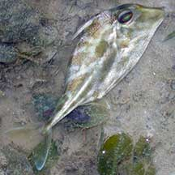
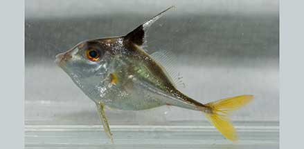
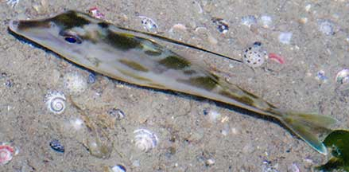
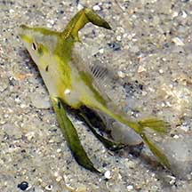

|
|
| fishes text index | photo index |
| Phylum Chordata > Subphylum Vertebrata > fishes |
| Tripodfishes Family Triacanthidae updated Nov 2020
Where seen? These flat silvery fishes with surprising pointy spines can sometimes be commonly seen on our Northern shores, among seagrasses. Some may be tiny (less than 3cm) and being flat, virtually disappear when seen from above. Larger ones may be seen in streams flowing out of the mangroves during low tide. They are often caught in fishing nets. What are tripodfishes? Tripodfishes belong to Family Triacanthidae. According to FishBase: the family has 4 genera and 7 species. They are found in the Indo-Pacific area. Features: 6-25cm. Body extremely flattened sideways, somewhat rhombus-shaped and silvery. The scales are tiny and almost impossible to see with the naked eye. The gill opening is a small vertical slit. The fish does indeed have a tripod made out of a pair of long, rigid pelvic fins and the tail fin. In addition, it also has a stiff dorsal fin spine and stiff spines on the pelvic fins. It can raise all these spines to make it difficult for a predator to swallow it. Its scientific name comes from the Greek 'tri' which means 'three' and 'akantha' which means 'thorn'. |
 Chek Jawa, Feb 02 |
 Sungei Buloh Wetland Reserve, Dec 03 |
 Disappears when seen from above! Changi, Jun 05 |
 About 2cm long, this juvenile has flaps on its pointed fins. Changi, Aug 05 . |
| What do they eat? Tripodfish are adapted for sandy or muddy coastal areas. Here, they
hunt for small fish and bottom-dwelling animals, sucking these up
with their pointed mouths. Human uses: Tripodfish are generally not considered good eating. When caught by trawlers together with other more marketable fish, tripodfish are considered trash. They are wastefully thrown back, often dead. In some places, however, such 'trash' fish are converted into fish meal or fertiliser. One species, the Short-nosed tripodfish (Triacanthus biaculeatus) is said to be used in traditional Chinese medicine. Status and threats: Our Tripodfishes are not listed among the threatened animals of Singapore. However, like other creatures of the intertidal zone, they are affected by human activities such as reclamation and pollution. |
| Tripodfishes on Singapore shores |
On wildsingapore
flickr
|
| Other sightings on Singapore shores |
| Family
Triacanthidae recorded for Singapore from Wee Y.C. and Peter K. L. Ng. 1994. A First Look at Biodiversity in Singapore. **from WORMS
|
Links
References
|